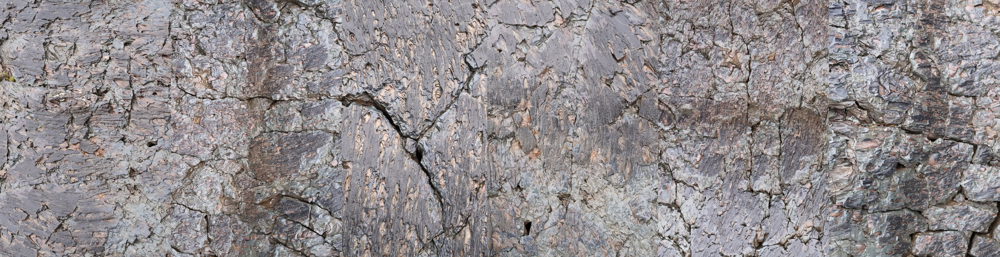

THE OBSERVATORY SUN VALLEY, A VICEROY RESORT
LANDSCAPE OFCENTRAL IDAHO
Five commissioned works by LISA WOOD STUDIO bring together two Central Idaho field sites: the volcanic surface of Craters of the Moon National Monument and the pre-dawn winter expanse of the Camas Prairie.
LARGE-SCALE PHOTOGRAPHS
Four works from Craters, Surface Surveys (2018), and one from Winterblue (2023) connect neighboring terrain beneath a dark sky through a practice shaped by discomfort, exposure, sustained attention, and discovery.
TERRAIN
Volcanic surface, winter darkness, protected sky, and remote ground become a visual study of exploration and the reward of experiencing remote places.
SECTION 1 — INTRODUCTION
FINDING LUXURY WITHIN A DARK SKY RESERVE
IDENTITY
Luxuriate in discomfort is a central philosophy for Wood and a theme running through her practice. It names her approach to exploration: stepping into challenging conditions and staying there long enough for perception to change.
The work is driven by adventure and rewarded with discovery.
VISUAL LANGUAGE
For The Observatory, the idea takes form through five large-scale photographs of the volcanic surface of Craters of the Moon National Monument and the pre-dawn winter expanse of the Camas Prairie. Together, they bring the surrounding terrain into The Observatory as a visual language for Central Idaho.

SECTION 2 — COMMISSION CRATERS
CRATERS, SURFACE SURVEYS (2018)
Craters of the Moon National Monument occupies a vast volcanic landscape on Idaho’s Snake River Plain. Its lava flows, cinder cones, spatter cones, fissures, and sagebrush plains form one of the best-preserved recent volcanic terrains in the continental United States.
The photographs, captured with a medium-format Leica S007, present the first known aerial study of the monument.
Four large-scale photographs from Craters bring the volcanic ground of Central Idaho into the Observatory through aerial studies of basalt, cooled surface, fissure, pressure, and mineral memory.
MATERIALS + FABRICATION
- Prints
- Archival pigment prints on Canson Baryta Photographique II
- Mounting
- Painted maple wood or float mounting, per installation location
- Fabrication
- Laumont Photographic, New York



SECTION 2 — COMMISSION WINTERBLUE
WINTERBLUE (2023)
PROJECT NOTE
Winterblue I is presented as a large-scale contact sheet — a grid of 125 individual photographs, one set of frames for each day spent on the Camas Prairie.


Individual tiles within Winterblue I
PRACTICE NOTE
The project carries regional character of embracing discomfort into winter atmosphere and emotional terrain.
17 trips between January and April to the Camas Prairie under sub-zero conditions turned darkness, cold, isolation, and grief into a field of attention.
The work demonstrates the practice — entering difficulty deliberately, staying long enough for perception to shift, and returning with images shaped by that exposure.
FIELD NOTE
Winterblue was born from a winter search for Lisa's missing family dog. For 11 days she and her community searched. Sleeping in her car, searching in whiteouts, she met the full force of winter in the form of fear, isolation, temperature, and overwhelming discomfort.
MATERIALS + FABRICATION
- Archival pigment print on Kodak Glossy
- Mounting
- Painted maple wood
- Fabrication
- Laumont Photographic, New York

SECTION 3 — STUDIO PRACTICE
CONNECTION TO REGIONAL IDENTITY AND GLOBAL LANDSCAPE
OVERVIEW
The commission begins in Central Idaho and extends into a global study of remote terrain. Craters connects to geologically significant landscapes across the world —the Greenland Ice Sheet, into the restricted airspace over White Sands National Park, across the longest parallel sand dunes in the world in Australia, and into the Middle East where the Bedouin roam — while Winterblue reveals both studio tenet and the character of the Wood River Valley: exit comfort as a means toward adventure, exploration, and discovery.
AN 8-YEAR PRACTICE
Luxuriate in Discomfort
A studio philosophy carried across three projects — a book, a one-night installation, and a public art project for teenage mental health.

A SIX-PART AERIAL STUDY
Surface Surveys
A field-based body of work documenting six remote and geologically significant landscapes across three continents — sand, ice, lava, gypsum, and granite.

SECTION 4 — MAPS AND FIELD SITES
LOCATIONS
FIELD SITE
Craters of the Moon
Craters of the Moon lies 65 miles southeast of The Observatory and spans approximately 620 square miles. The landscape is a vast Holocene lava field shaped by lava flows, cinder cones, spatter cones, fissures, and sagebrush plains, with a scientific and cultural history that includes its 1924 National Monument designation, Apollo astronaut geology training, continued NASA research, and its 2017 designation as an International Dark Sky Park.

FIELD SITE
Camas Prairie
Camas Prairie lies 60 miles southwest of The Observatory and spans approximately 200 square miles. The prairie is a structural basin shaped by ancient lake, stream, alluvial, and basalt deposits, with a cultural history rooted in camas gathering by Shoshone, Bannock, and Paiute peoples and later emigrant travel along Goodale's Cutoff.
View field photographs

SECTION 5 — ABOUT THE ARTIST
LISAWOOD
PRACTICE
Over the past decade, Lisa has produced 17 projects and more than 200 works across photography, mixed media, public installation, text, and essay. The work is built through immersion — repetition, duration, and close observation in remote terrain, often alone and under physically demanding conditions.
PLACE
Born in Naples, Italy. Raised in Pittsburgh. BA in English Literature, College of William & Mary. Mother of two sons. Sun Valley resident since 1992.